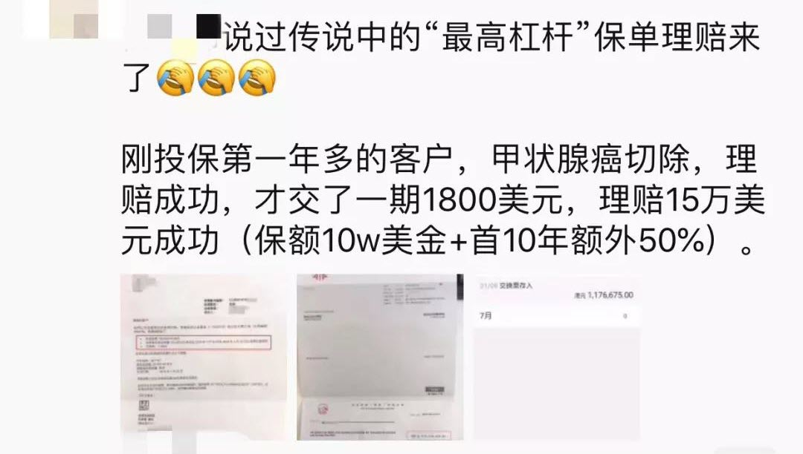
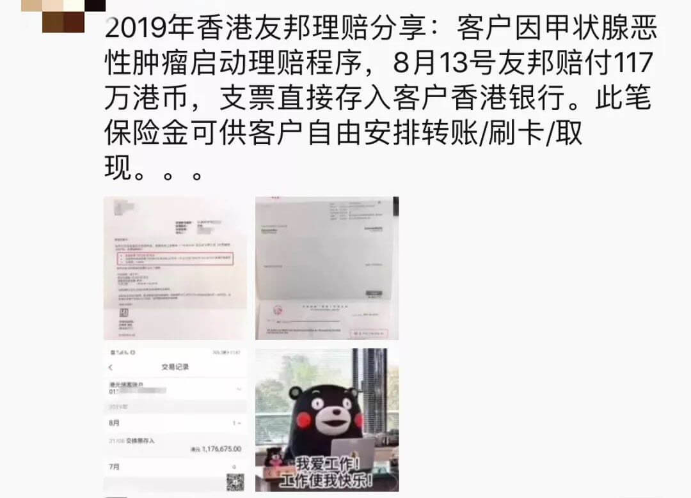
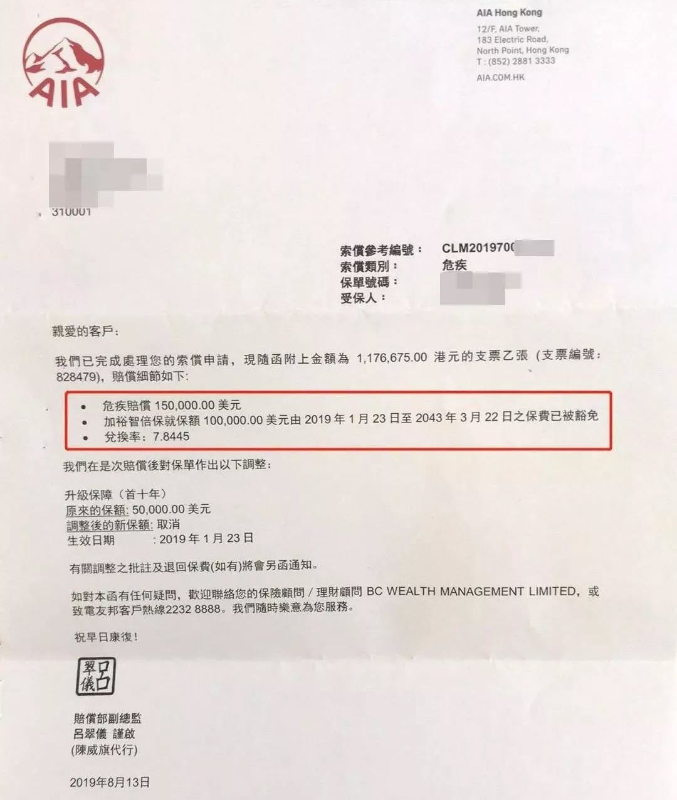
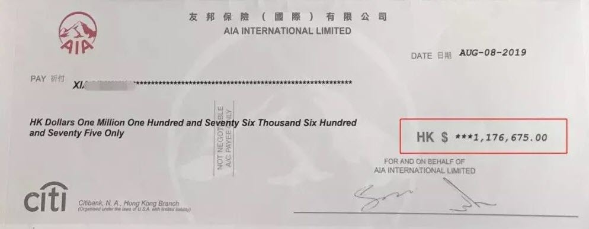
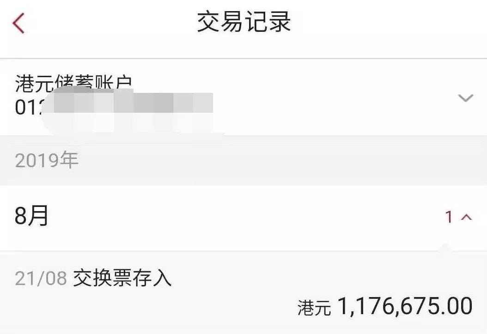
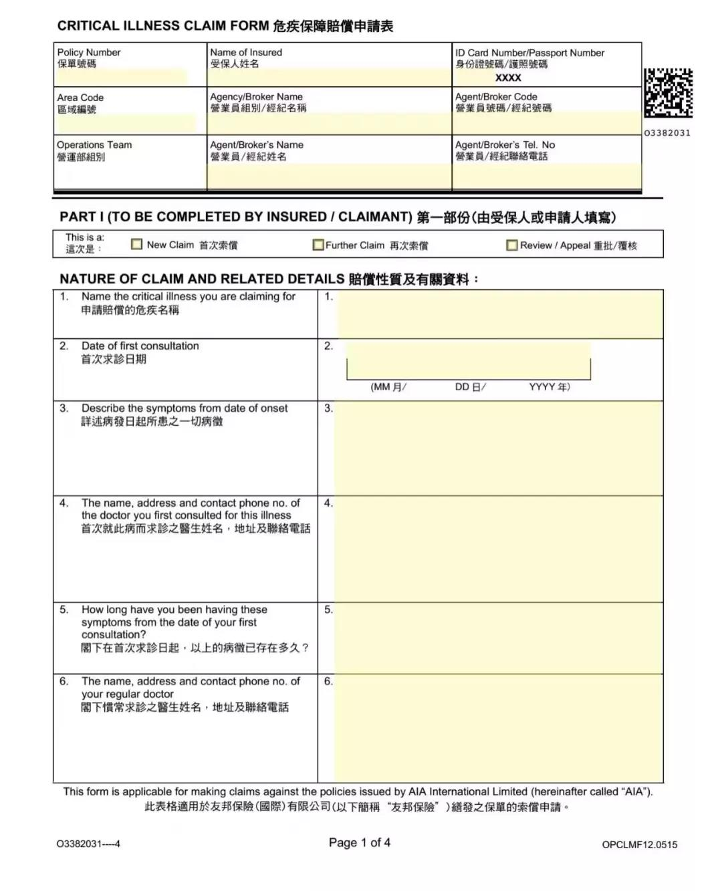
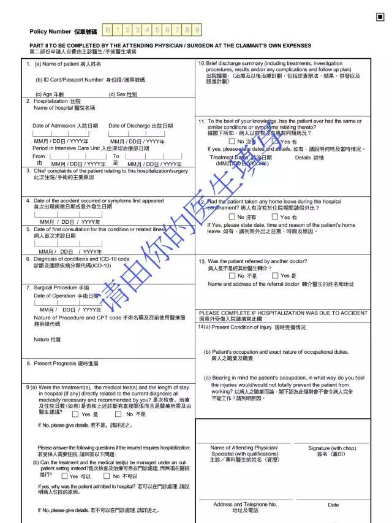

投保案例
INFORMATION理赔案例：香港保险甲状腺癌理赔...
今天，熊猫港险分享的是一个真实理赔的案例，香港保险的理赔并不复杂。
起先看到这个案例，想和大家讲讲客户可以自由将理赔款转账、刷卡、取现…后来看到申请理赔原因是：甲状腺恶性肿瘤…..
我觉得很奇怪….没错，就是我觉得！毕竟听过很多内地保险从业人员最爱说的就是：香港保险不保甲状腺癌的！！诶~~~纳尼？说好的不保咋就不赔呢？毕竟那是他们说的不赔，可不是咱香港保险公司说不赔，到今年都还有人跟熊猫港险纠结这问题，也是十分无奈。在此希望有在考虑香港保险的朋友别被瞎带节奏了。您需要专业靠谱的服务人员！比如熊猫港险！
言归正传，今天要给大家介绍的是最新额一位内地客户的重疾理赔案例，2019年8月23日理赔款已经打到客户香港账户了！
同时，把理赔款可以如何使用讲的清清楚楚，是的，香港重疾险的理赔款您到账后，可以转账，刷卡消费，取现，都可以的！使用非常的方便自由。
发生了什么？
客户2018年3月份投保了一份香港友X的重疾险「加裕智bèi保」,保额10万美金，每年保费1800美金。
不幸的是，同年12月，客户在上海复旦肿瘤医院被诊断出双侧甲状腺叶乳头状癌（TNM1）, 当月即遵医生建议做了双侧甲状腺切除手术。
2019年3月份，客户手术恢复后向保险公司申请理赔。
（这里可以和大家分享一下，客户就诊的医院是上海复旦肿瘤医院，医院当时明确告知病理报告等手术前后的资料医院需要保留归档，无法提供给客户，医院为了配合客户理赔复印了全套的资料给到了客户，保险公司对于资料没有异议，审核之后也第一时间回寄给了客户）
8月份，友X依据保险合同理赔15万美金理赔款（10万基本保额+首十年50%升级保障。）
客户理赔成功支票：
对于重疾险来说，理赔的时候都是一笔过给付当初客户自己定下的保额以及当年所对应的分红，不涉及到后续客户住院和治疗的问题，只要在正规医院被确诊为重疾或者身故，有医生填写的确诊以及一些体检病理报告就可以直接向公司申请全额理赔，非常方便快捷。主要流程如下：
第一步：填写赔偿申请表格第一部分：《危疾保障赔偿申请表》
这个其他文件主要会根据重疾种类的不同而要求有所不同，简单来说就是体检的项目结果正本，比如：
①如果一个人被确认为癌症的话，那么势必在确诊前医生会要求病人去做验血报告，病例报告等，
②如果被确诊为心脏病的话，那么势必医生需要病人去做心电图，心脏超声波，才可以给到准确无误地确诊结果，
那么这些其他文件指的就是这些确诊依据的文件正本。
如果是一些意外或者极端情况的话还会要求以下文件：
附加文件（如适用）
①申请退回正本文件
②申请寿险及团体赔偿安排
③政府医院签发的出院摘要（如适用）
④清晰列明病症的病假证明
⑤警署报告及／或交通意外报告
⑥其它保险公司／机构的赔偿结算表
写在最后
很多内地保险从业人员指出甲状腺癌不保，其实是在香港友X重疾险的疾病定义中看到的，略带看过就表达香港重疾险不保甲状腺癌，实际是在T1N0M0或以下级别的友邦不做重疾处理，而是以早期恶性肿瘤进行赔付了。
若只是在上述评级以下的甲状腺癌，根本满足不了内地的癌症重疾定义，也无法申请理赔。香港的分级理赔，给患病的每个时段多重选择。熊猫港险认为比一刀切：必须等到罹患重疾了才理赔更有人性化。
香港保险，保险行业的领先者，在这个风险一触即发的时代，香港保险代表着安全、可靠，早已获得了越来越多内地客户的认可。
起先看到这个案例，想和大家讲讲客户可以自由将理赔款转账、刷卡、取现…后来看到申请理赔原因是：甲状腺恶性肿瘤…..
我觉得很奇怪….没错，就是我觉得！毕竟听过很多内地保险从业人员最爱说的就是：香港保险不保甲状腺癌的！！诶~~~纳尼？说好的不保咋就不赔呢？毕竟那是他们说的不赔，可不是咱香港保险公司说不赔，到今年都还有人跟熊猫港险纠结这问题，也是十分无奈。在此希望有在考虑香港保险的朋友别被瞎带节奏了。您需要专业靠谱的服务人员！比如熊猫港险！

言归正传，今天要给大家介绍的是最新额一位内地客户的重疾理赔案例，2019年8月23日理赔款已经打到客户香港账户了！

这个朋友圈，强调了香港重疾险的高杠杆性，1800美元的保费，撬动了USD15万美元（约HKD117万）的杠杆，杠杆多高，大家自己可以计算一下！同时，把理赔款可以如何使用讲的清清楚楚，是的，香港重疾险的理赔款您到账后，可以转账，刷卡消费，取现，都可以的！使用非常的方便自由。

发生了什么？
客户2018年3月份投保了一份香港友X的重疾险「加裕智bèi保」,保额10万美金，每年保费1800美金。
不幸的是，同年12月，客户在上海复旦肿瘤医院被诊断出双侧甲状腺叶乳头状癌（TNM1）, 当月即遵医生建议做了双侧甲状腺切除手术。
2019年3月份，客户手术恢复后向保险公司申请理赔。
（这里可以和大家分享一下，客户就诊的医院是上海复旦肿瘤医院，医院当时明确告知病理报告等手术前后的资料医院需要保留归档，无法提供给客户，医院为了配合客户理赔复印了全套的资料给到了客户，保险公司对于资料没有异议，审核之后也第一时间回寄给了客户）
8月份，友X依据保险合同理赔15万美金理赔款（10万基本保额+首十年50%升级保障。）
客户理赔成功支票：

客户香港账户到账记录：

香港友邦理赔程序对于重疾险来说，理赔的时候都是一笔过给付当初客户自己定下的保额以及当年所对应的分红，不涉及到后续客户住院和治疗的问题，只要在正规医院被确诊为重疾或者身故，有医生填写的确诊以及一些体检病理报告就可以直接向公司申请全额理赔，非常方便快捷。主要流程如下：
第一步：填写赔偿申请表格第一部分：《危疾保障赔偿申请表》

第二步：由主诊医生填写申请表格第二部分，将病情详细描述以及提供确认体检结果。

第三步：连同其他文件一起递交。这个其他文件主要会根据重疾种类的不同而要求有所不同，简单来说就是体检的项目结果正本，比如：
①如果一个人被确认为癌症的话，那么势必在确诊前医生会要求病人去做验血报告，病例报告等，
②如果被确诊为心脏病的话，那么势必医生需要病人去做心电图，心脏超声波，才可以给到准确无误地确诊结果，
那么这些其他文件指的就是这些确诊依据的文件正本。
如果是一些意外或者极端情况的话还会要求以下文件：
附加文件（如适用）
①申请退回正本文件
②申请寿险及团体赔偿安排
③政府医院签发的出院摘要（如适用）
④清晰列明病症的病假证明
⑤警署报告及／或交通意外报告
⑥其它保险公司／机构的赔偿结算表
写在最后
很多内地保险从业人员指出甲状腺癌不保，其实是在香港友X重疾险的疾病定义中看到的，略带看过就表达香港重疾险不保甲状腺癌，实际是在T1N0M0或以下级别的友邦不做重疾处理，而是以早期恶性肿瘤进行赔付了。
若只是在上述评级以下的甲状腺癌，根本满足不了内地的癌症重疾定义，也无法申请理赔。香港的分级理赔，给患病的每个时段多重选择。熊猫港险认为比一刀切：必须等到罹患重疾了才理赔更有人性化。
香港保险，保险行业的领先者，在这个风险一触即发的时代，香港保险代表着安全、可靠，早已获得了越来越多内地客户的认可。

扫一扫关注微信公众号
咨询电话:0105151551
公司地址:上海浦东新区
备案号:0-1245187431
版权所属:上海市浦东新区